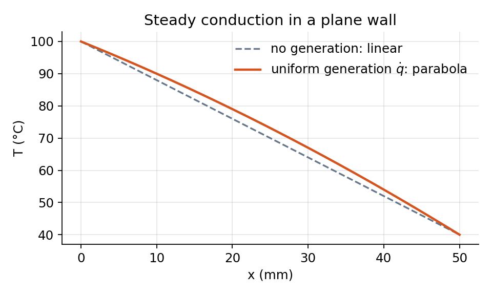
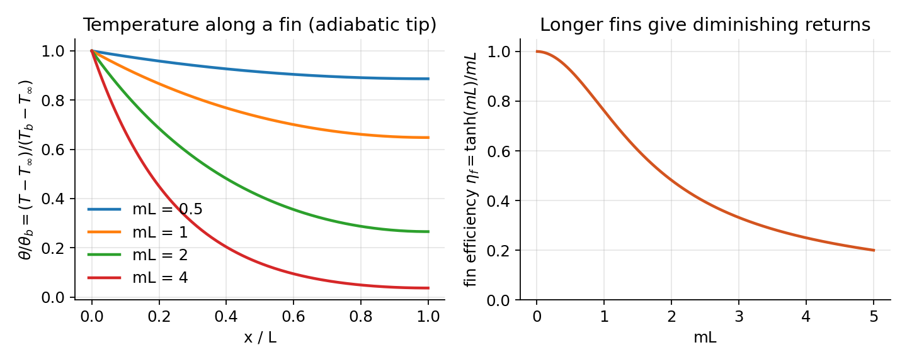

Steady One-Dimensional Conduction¶
With no storage and no generation, the heat equation in one dimension is \(d^2T/dx^2 = 0\): the temperature is linear and the heat rate is the same through every section. That simple fact is the basis of the thermal-resistance method.
Plane Wall and Thermal Resistance¶
For a wall of thickness \(L\), area \(A\), with faces at \(T_1\) and \(T_2\),
Thermal resistances
Heat rate \(=\) temperature difference \(/\) resistance, in direct analogy with Ohm’s law:
Resistances in series add; resistances in parallel add as conductances. The overall heat transfer coefficient is defined by \(q = UA\,\Delta T_{\text{overall}}\) with \(UA = 1/R_{\text{total}}\).
The method is exact for one-dimensional steady conduction without generation and is a good approximation whenever the temperature varies mainly along one direction. Its power is that a wall with paint, insulation, an air gap, and convection on both sides becomes a chain of resistances that can be written down in one line.
Contact Resistance¶
Two solids pressed together touch only at the peaks of their surface roughness; the gaps are filled with air or vacuum. The result is a temperature jump at the interface, described by a contact resistance \(R''_{t,c} = \Delta T_{\text{interface}}/q''\) with typical values \(10^{-4}\) to \(10^{-3}\) m\(^2\cdot\)K/W for bare metal joints. Thermal grease, soft interface pads, and higher clamping pressure all reduce it, and in electronics packaging it is often the dominant resistance in the whole path.
Cylinders and Spheres¶
In a cylinder the area through which heat flows grows with radius, so the temperature is logarithmic rather than linear:
Adding insulation to a small pipe can increase the heat loss: the conduction resistance grows with the outer radius but the convection resistance \(1/(2\pi r L h)\) shrinks. The total is minimum at the critical radius \(r_{cr} = k/h\) for a cylinder (\(2k/h\) for a sphere). For pipes this is only a few millimetres and rarely matters; for thin wires it is why insulation can help cooling.
Heat Generation¶
With uniform generation \(\dot q\) in a plane wall of thickness \(L\) with faces at \(T_1\) and \(T_2\), integrating \(k\,d^2T/dx^2 = -\dot q\) twice gives a parabola:
The heat rate is no longer the same through every section, so the resistance method does not apply inside the generating region; it still applies to everything outside it.

Extended Surfaces: Fins¶
A fin increases the surface area for convection. Along a fin of constant cross-section \(A_c\), perimeter \(P\), and conductivity \(k\), in a fluid at \(T_\infty\) with coefficient \(h\), the energy balance on a slice gives, with \(\theta = T - T_\infty\),
Fin with an adiabatic tip
For a fin of length \(L\) with base excess temperature \(\theta_b\) and negligible heat loss from the tip,
A tip that convects is handled by the corrected length \(L_c = L + A_c/P\) in the same formulas.
The fin efficiency \(\eta_f\) compares the fin to an ideal fin at the base temperature everywhere; the fin effectiveness \(\varepsilon_f = q_f/(hA_c\theta_b)\) compares it to no fin at all, and fins are worth adding only when \(\varepsilon_f \gtrsim 2\). Because \(\tanh mL\) saturates, a fin longer than about \(mL = 2.5\) adds material without adding heat transfer.
